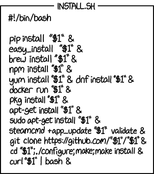

ArtifactsESEC/FSE 2018
Call For Papers
Authors of accepted research papers are invited to submit an artifact to the FSE Artifact Track. Note that any such artifact can also be submitted to the ESEC/FSE demonstration track (and vice versa).
Research papers with “artifacts” receive a “badge” on the front page of their paper in the proceedings. These badges certify that the paper has associated artifacts of the following form:
| Functional | Reusable | Available | Replicated | Reproduced | |
|---|---|---|---|---|---|
| No Badge |  | .jpg) | .jpg) | .jpg) | .jpg) |
| Artifacts documented, consistent, complete, exercisable, and include appropriate evidence of verification and validation. | Functional + very carefully documented and well-structured to the extent that reuse and repurposing is facilitated. In particular, norms and standards of the research community for artifacts of this type are strictly adhered to. | Functional + Placed on a publicly accessible archival repository. A DOI or link to this repository along with a unique identifier for the object is provided. | Available + main results of the paper have been obtained in a subsequent study by a person or team other than the authors, using, in part, artifacts provided by the author. | Available + The main results of the paper have been independently obtained in a subsequent study by a person or team other than the authors, without the use of author-supplied artifacts. |
Papers with such badges contain reusable products that other researchers can use to bootstrap their own research. Such papers earn increased citations and greater prestige in the research community. Artifacts of interest include (but are not limited to) the following. This list is not exhaustive, but if your proposed artifact is not on this list, please email the chairs before submitting.
-
Software, which are implementations of systems or algorithms potentially useful in other studies. "
-
Data repositories, which are data (e.g., logging data, system traces, survey raw data) that can be used for multiple software engineering approaches.
-
Frameworks, which are tools and services illustrating new approaches to software engineering that could be used by other researchers in different contexts.
Selection Criteria
The ESEC/FSE artifacts track will evaluated using the criteria in the last row of the above table.
The goal of this track is to encourage reusable research products.
- Hence, no “functional” badges will be awarded
Note that for “replicated” and “reproduced” badges, authors will need to offer appropriate documentation that their artifacts have reached that stage.
- So it is anticipated that most of our artifacts will be “reusable” and “available”.
Review Process
-
Artifacts will be reviewed via a double blinded GitHub-based process. All reviews will be Github issues.
-
Artifacts will be checked for their “badge worthiness” by one reviewer unless there is an author/reviewer dispute in which case a second check will be conducted by a second reviewer or one of the chairs.
-
Reviewers will be assigned an anonymous GitHub ID.
-
And authors will interact with the reviewers using their real (non-anonymously).
-
Reviewers will have 14 days to assess the artifacts.
-
Reviewers and authors will then have one week to interact such that (e.g.) if there is one line missing in a config file, then that bug can be fixed and the artifact declared “reusable”.
-
Track chairs will then meet to write a “decisions.md” list written to the http://github.com/researchart/fse18 that contains a table of submissions and their associated badge (if any).
Submission Process
-
(Optional) Read “Good Enough Practices in Scientific Computing” by Greg Wilson, Jennifer Bryan, Karen Cranston, Justin Kitzes, Lex Nederbragt, Tracy K. Teal. https://arxiv.org/pdf/1609.00037 and consider if the advice of Section4 is useful for you. Also, read Section7 for a list of packaging options that, might be, overly elaborate (but you would need to decide that for yourself.
-
Prepare all the supporting materials needed to execute an artifact:
-
a README main file describing what the artifact does;
-
A STATUS file stating what kind of badge you are applying for (one of reusable, available, replicated, reproduced) as well as the reasons why you think your artifact deserves that badge.
-
a LICENSE file describing the distribution rights (and note that to score “available” or higher, then that license needs to be some form of open source license).
-
an INSTALL file with installation instructions. These instructions should include notes on what output to expect that confirms
-
The code is installed and working
-
The code is doing something interesting and useful
-
Enough associated code and data such that some CS person with a reasonable knowledge of scripting, build tools, etc. could install, build, run your code; i.e. anyone that gets the following joke:
-
Place in a directory with some ID that refers to a contact author, plus a tool name, plus and ESEC/FSE title/id number.
-
Zip that file.
-
Place that file online.
-
Go to http://tiny.cc/18fseartifacts and fill in a submission form which will ask you to include a link to your zip file.
-
If, in a few days, your directory has not appeared at https://github.com/researchart/fse18/tree/master/submissions, then ping tim@menzies.us or olga.baysal@carleton.ca
Important Dates
-
June 11: ESEC/FSE technical paper notification
-
June 25: Artifact submission deadline
-
July 7: begin discussion period with reviewers
-
July 21: Track chairs meeting to write the decisions.txt document listing what badge (if any) is assigned to each artifact.
-
July 31: ESEC/FSE camera ready deadline
Artifact Evaluation Co-Chairs
-
Olga Baysal (Carleton University , Canada)
-
Tim Menzies (NC State, USA)
Program Committee
-
Latifa Guerrouj, Ecole de Technologie Superieure, Canada
-
Barbara Russo, Free University of Bolzano/Bozen, Italy
-
Reyhaneh Jabbarvand Behrouz, University of California, Irvine, USA
-
Eunjong Choi, Nara Institute of Science and Technology, Japan
-
Maria Gomez, Saarland University, Germany
-
Bonita Sharif, Youngstown State University, USA
-
David Lo, Singapore Management University, Singapore
-
Collin McMillan, University of Notre Dame, USA
-
Hungyu Zhang, Newcastle University, Australia